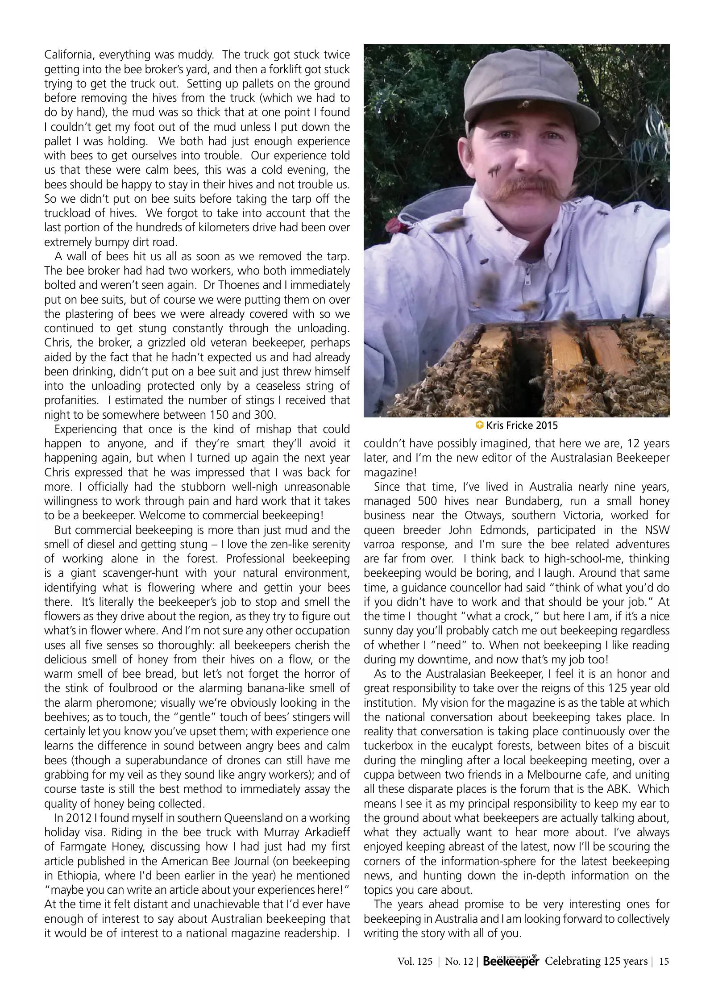

California, everything was muddy. The truck got stuck twice
getting into the bee broker’s yard, and then a forklift got stuck
trying to get the truck out. Setting up pallets on the ground
before removing the hives from the truck (which we had to
do by hand), the mud was so thick that at one point I found
I couldn’t get my foot out of the mud unless I put down the
pallet I was holding. We both had just enough experience
with bees to get ourselves into trouble. Our experience told
us that these were calm bees, this was a cold evening, the
bees should be happy to stay in their hives and not trouble us.
So we didn’t put on bee suits before taking the tarp off the
truckload of hives. We forgot to take into account that the
last portion of the hundreds of kilometers drive had been over
extremely bumpy dirt road.
A wall of bees hit us all as soon as we removed the tarp.
The bee broker had had two workers, who both immediately
bolted and weren’t seen again. Dr Thoenes and I immediately
put on bee suits, but of course we were putting them on over
the plastering of bees we were already covered with so we
continued to get stung constantly through the unloading.
Chris, the broker, a grizzled old veteran beekeeper, perhaps
aided by the fact that he hadn’t expected us and had already
been drinking, didn’t put on a bee suit and just threw himself
into the unloading protected only by a ceaseless string of
profanities. I estimated the number of stings I received that
night to be somewhere between 150 and 300.
Experiencing that once is the kind of mishap that could
happen to anyone, and if they’re smart they’ll avoid it
happening again, but when I turned up again the next year
Chris expressed that he was impressed that I was back for
more. I officially had the stubborn well-nigh unreasonable
willingness to work through pain and hard work that it takes
to be a beekeeper. Welcome to commercial beekeeping!
But commercial beekeeping is more than just mud and the
smell of diesel and getting stung – I love the zen-like serenity
of working alone in the forest. Professional beekeeping
is a giant scavenger-hunt with your natural environment,
identifying what is flowering where and gettin your bees
there. It’s literally the beekeeper’s job to stop and smell the
flowers as they drive about the region, as they try to figure out
what’s in flower where. And I’m not sure any other occupation
uses all five senses so thoroughly: all beekeepers cherish the
delicious smell of honey from their hives on a flow, or the
warm smell of bee bread, but let’s not forget the horror of
the stink of foulbrood or the alarming banana-like smell of
the alarm pheromone; visually we’re obviously looking in the
beehives; as to touch, the “gentle” touch of bees’ stingers will
certainly let you know you’ve upset them; with experience one
learns the difference in sound between angry bees and calm
bees (though a superabundance of drones can still have me
grabbing for my veil as they sound like angry workers); and of
course taste is still the best method to immediately assay the
quality of honey being collected.
In 2012 I found myself in southern Queensland on a working
holiday visa. Riding in the bee truck with Murray Arkadieff
of Farmgate Honey, discussing how I had just had my first
article published in the American Bee Journal (on beekeeping
in Ethiopia, where I’d been earlier in the year) he mentioned
“maybe you can write an article about your experiences here!”
At the time it felt distant and unachievable that I’d ever have
enough of interest to say about Australian beekeeping that
it would be of interest to a national magazine readership. I
couldn’t have possibly imagined, that here we are, 12 years
later, and I’m the new editor of the Australasian Beekeeper
magazine!
Since that time, I’ve lived in Australia nearly nine years,
managed 500 hives near Bundaberg, run a small honey
business near the Otways, southern Victoria, worked for
queen breeder John Edmonds, participated in the NSW
varroa response, and I’m sure the bee related adventures
are far from over. I think back to high-school-me, thinking
beekeeping would be boring, and I laugh. Around that same
time, a guidance councellor had said “think of what you’d do
if you didn’t have to work and that should be your job.” At
the time I thought “what a crock,” but here I am, if it’s a nice
sunny day you’ll probably catch me out beekeeping regardless
of whether I “need” to. When not beekeeping I like reading
during my downtime, and now that’s my job too!
As to the Australasian Beekeeper, I feel it is an honor and
great responsibility to take over the reigns of this 125 year old
institution. My vision for the magazine is as the table at which
the national conversation about beekeeping takes place. In
reality that conversation is taking place continuously over the
tuckerbox in the eucalypt forests, between bites of a biscuit
during the mingling after a local beekeeping meeting, over a
cuppa between two friends in a Melbourne cafe, and uniting
all these disparate places is the forum that is the ABK. Which
means I see it as my principal responsibility to keep my ear to
the ground about what beekeepers are actually talking about,
what they actually want to hear more about. I’ve always
enjoyed keeping abreast of the latest, now I’ll be scouring the
corners of the information-sphere for the latest beekeeping
news, and hunting down the in-depth information on the
topics you care about.
The years ahead promise to be very interesting ones for
beekeeping in Australia and I am looking forward to collectively
writing the story with all of you.
Kris Fricke 2015
Vol. 125 | No. 12 |
Celebrating 125 years | 15